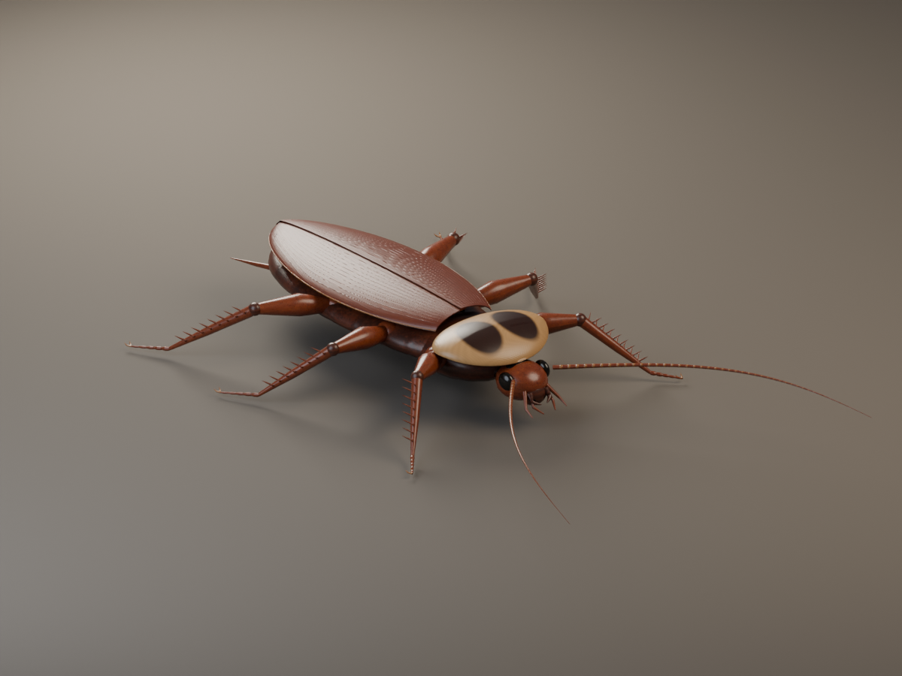
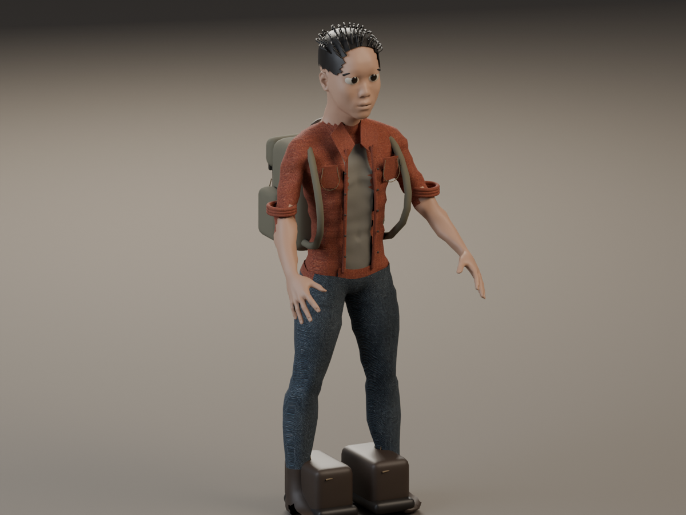
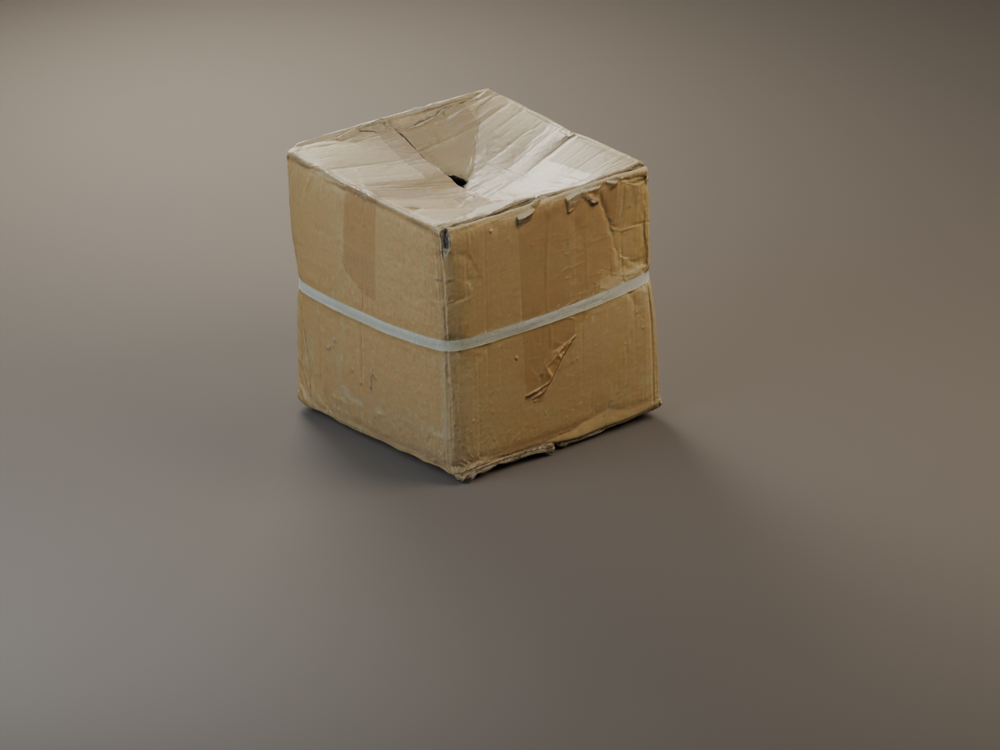
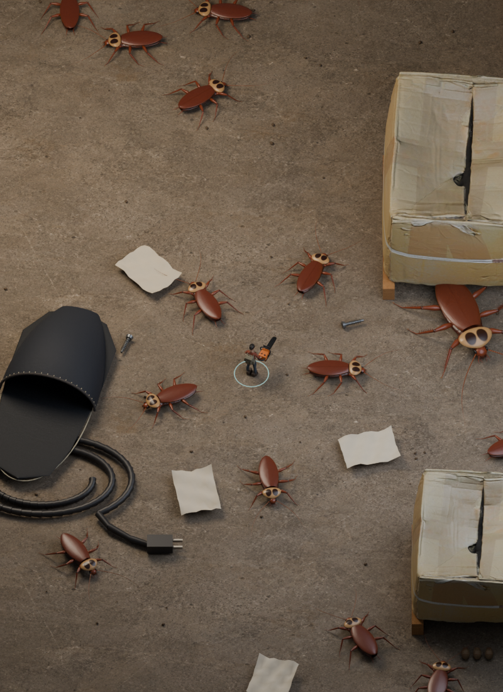

从确认稿到游戏资产。
这是首轮正式制作对照，尚未达到最终美术验收。右侧图片与动作视频使用实际导出的游戏网格，在 Blender 中离线渲染；它们不是网页实机截图。当前检查环境不支持 WebGL 2，手机画面与性能还没有完成验证。
01 · 美洲大蠊
公开候选的完整文件未能取得，因此自行制作。高精度源模型、游戏网格、UV、烘焙贴图和骨骼均已保留；六足、左右翅组及眼部独立破坏，掉落时保留当前关节姿态。
已确认 · 美术基准

当前 · 游戏网格离线渲染

02 · 主角与随身装备
已确认 · 美术基准

当前 · 游戏网格离线渲染

03 · 环境样板
已确认 · 整体场景

已采用 · 许可明确的实物扫描

展开整体场景的离线检查画面
由游戏中的场景网格导出，使用统一检查灯光。可检查尺度与摆放；实际光照、战斗特效和手机表现需在游戏中验收。

制作记录与检验范围
| 资产 | 高模 / 游戏三角面 | 实际交付 |
|---|---|---|
| 美洲大蠊 | 1,049,456 / 19,408 | 四类烘焙贴图、30 根骨骼、10 个独立部位、6 段动作 |
| 主角 | 883,712 / 54,836 | 高低模、颜色/法线/AO/粗糙度/金属度、14 根骨骼、待机与行走 |
| 电锯 | 370,944 / 23,156 | 制造细节源模型和五类 PBR 烘焙贴图 |
| 纸箱 | 扫描游戏网格 16,952 | 原始文件、作者与许可、扫描贴图及游戏导出 |
面数只记录制作过程。是否合格仍取决于轮廓、结构、材质与实际游戏表现。已检查骨骼采样、带贴图的断肢快照、暂停、战斗成长逻辑，以及分段资源加载和 43% 问题的回归用例。